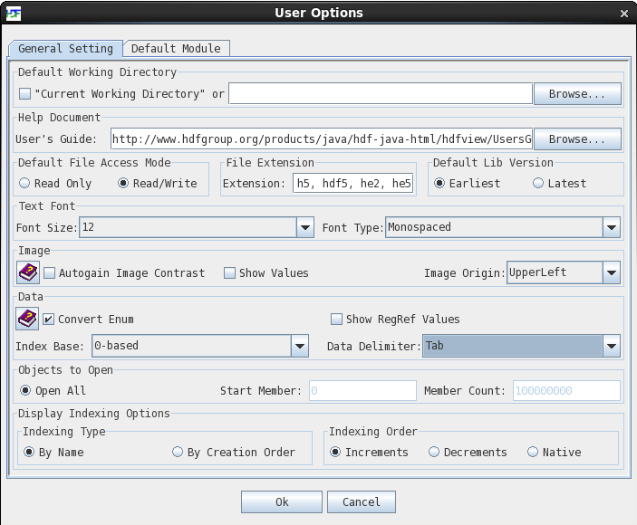
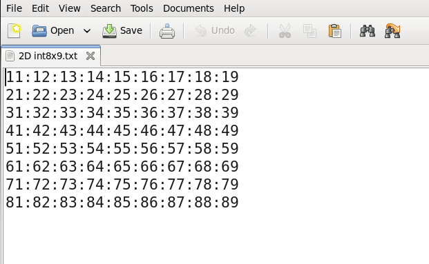
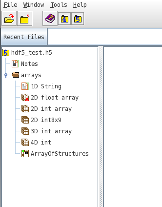
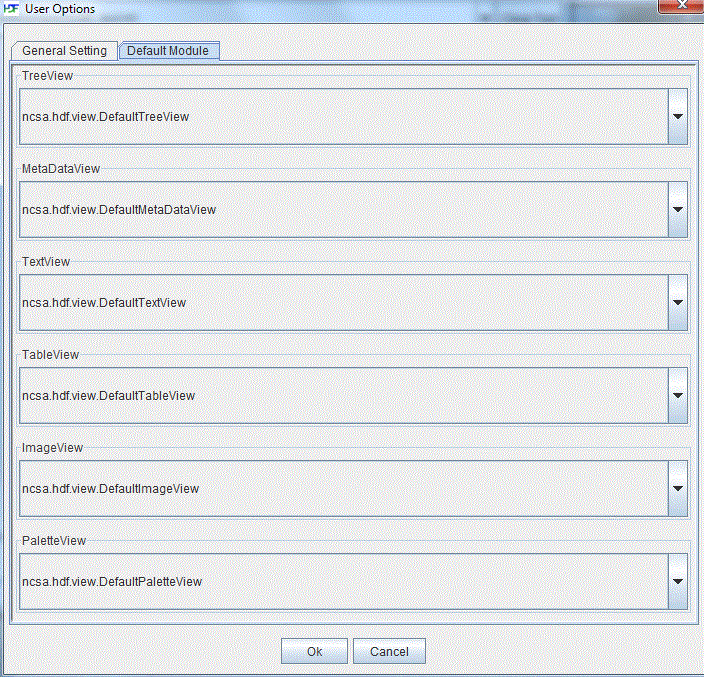
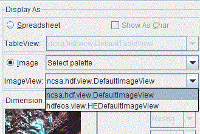

[Index] [1] [2] [3] [4] [5] [6] [7] [8]
This chapter explains the different options of HDFView accessible from the Tools menu.
HDFView comes with an array of configurable options that determine the way it operates on or displays data. These can be changed by clicking on "User Options" from the Tools menu.

User Options dialog box
Upon exit, HDFView saves all the current settings to a properties file in the user's home directory. The file's name follows the format '.hdfview{version number}' where version number is the current version number of HDFView.
By default, HDFView will open with the current directory being set to the path specified in the text field under this section. If "Current Working Directory" is selected instead, HDFView will open with the current directory set to the folder from which HDFView was launched. Setting the current directory affects where HDFView first opens to when opening/saving files, locating files, etc.
This section contains a single field which holds the path to the HDFView User's Guide. The path can either be entered as an absolute file name, file path, or URL to a remote file, or the browse button can be used to locate the guide from the filesystem. When the user clicks the icon on the tool bar, the program goes to the path specified here and opens the User's Guide if it is able to locate it.
By default, HDFView opens files in editing mode, allowing both reading and writing to files, as well as the ability to save changes. However, by changing the default mode to read only, the user can force HDFView to open all files as read-only, disabling editing and preventing changes to opened files.
The text field located here displays a list of all file formats currently recognized by HDFView. This is used when choosing a file to open, as HDFView will look for and show files that have an extension matching any from this list. If needed, the user can type into this field and add their own file types for HDFView to look for.
Here the user can choose which version, the earliest version or latest version, of the HDF5 library to be used as the default when creating objects.
Under this section, the user can specify what size of font, as well as font type, to use. The newly selected font takes place immediately and affects all text displayed inside HDFView.
The "Autogain Image Contrast" option here calculates a gain and bias combination that stretches images to match with the graphics system's pixel values. Further information is provided by the icon in the User Options.
The "Show Values" option enables showing the values of individual pixels in an image. While this option is selected, moving the cursor over a pixel of an image inside the ImageViewer will display that pixel's location (in relative terms from the origin), as well as the value of the pixel.
The Image Origin dropbox in this section allows the user to select which of the four corners, Upper left, Upper right, Lower left or Lower right, to use as the origin for images.
The "Convert Enum" option enforces conversion of enum type data into a string equivalent. Further information is provided by the icon next to the "Convert Enum" option.
"Show RegRef Values" allows the user to see the data pointed to by a Dataset Region Reference inline with the selected reference. If this option is not selected, the user must right click on a region reference and choose to display as a table or image in order to view the associated data.
The Index Base determines whether indexed objects, such as numbered cells or the coordinates of an image's origin, should start with 0 or 1 as the first index.
The Data Delimiter section allows the user to select a character to use as a separator for data when performing operations such as saving data to a file, importing data from a file or copying/pasting data between HDFView and other applications. The delimiter selected will be appended to data written to files, as shown below. Note: When importing data from a file, the user must know the delimiter used for the file, else data may not be able to be imported properly.

Dataset saved to file with ':' delimiter
By default, HDFView loads all objects in a file upon loading the file. In some cases, however, it is useful to load a subset of the objects. To do so, first click on "Open All" in the "Objects to Open" section to unselect it, then pick a suitable start member (with member 0 being the root group) and the number of members to load in total. Note: Groups count towards the member count, as does the root group.

Start Member = 0, Member Count = 10
Display Indexing options change the order in which objects are displayed in the HDFView TreeView panel.
The Indexing Type determines the way in which the objects get sorted. Objects can either be sorted by name or by the order in which they were created.
Indexing Order further sorts the objects by ascending or descending order. If "Increments" is chosen, objects that would come first after sorting will be displayed at the top of the TreeView, with all following objects arranged below. If "Decrements" is chosen, these objects would instead be displayed at the bottom of the TreeView, with all following objects arranged above.
HDFView displays data with a default GUI module when opening a dataset by default. You can set default modules from the "Default Modules" tab in the User Options window. Provided that modules have been implemented and are available (see How to Implement HDFView Modules), clicking on the drop-down boxes will allow you to select a new default module for the individual components. The new default module takes effect only after you restart HDFView.

Set default modules
By default, data and attributes are displayed with default modules. You can also select a specific module for display. Use the “Open As” option from an object's popup menu from the TreeView to choose an optional TableView or ImageView.

Select an ImageView
[Index] [1] [2] [3] [4] [5] [6] [7] [8]